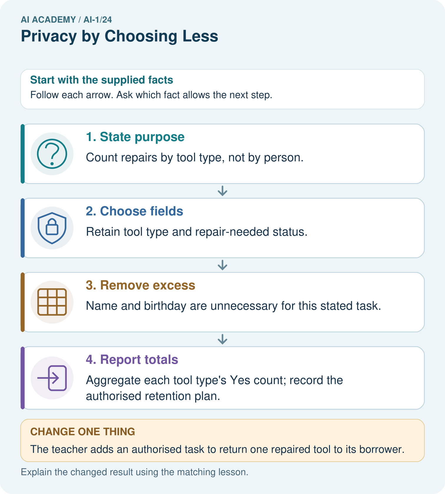
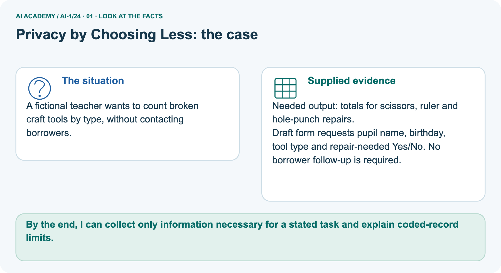
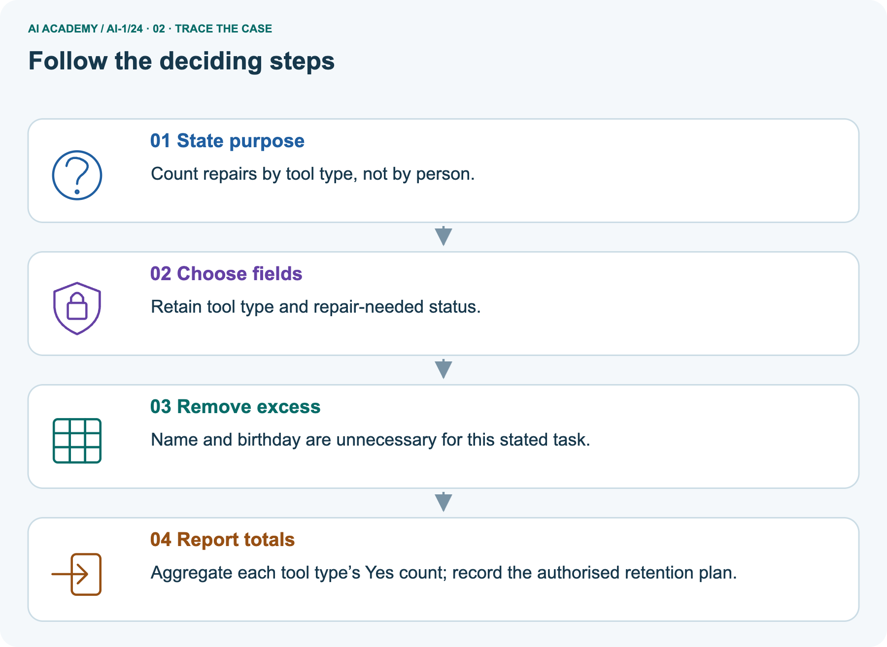
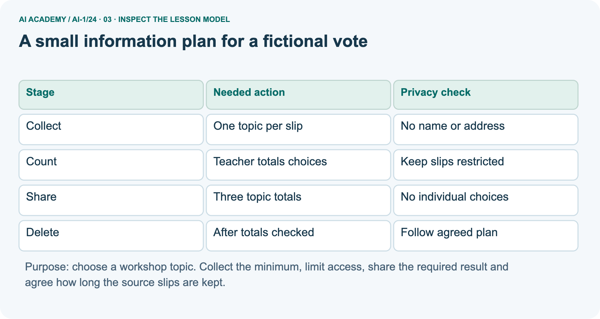
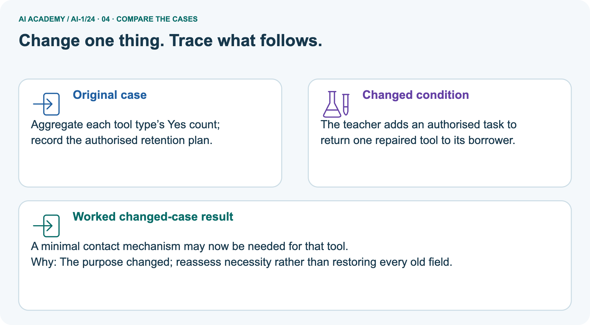
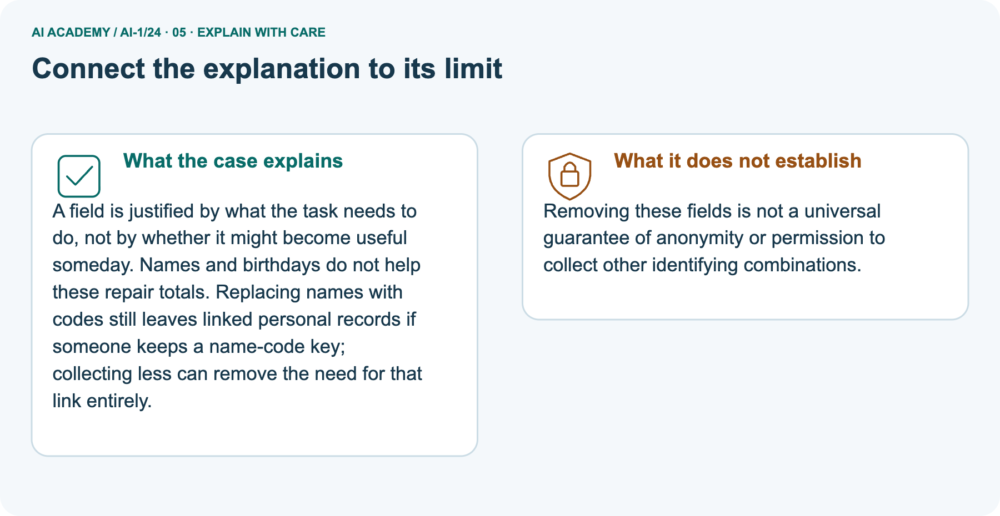
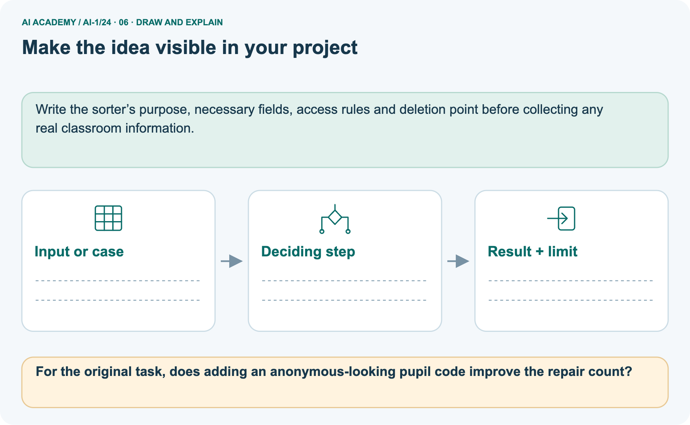

AI Academy · Level 1 · Grade 6 · Week 24 · Workbook
Privacy by Choosing Less
Learn to understand, design, build, test and explain AI systems responsibly.
Project: Helpful Classroom Sorter
Workbook · 1 of 21
Recall and choose your starting point
Record your starting explanation for Privacy by Choosing Less before opening notes. Show any later correction separately.
Try the recall before opening notes. Then use a different colour or a labelled second line to correct your explanation.
Fair for Whom?
Without opening the old lesson, explain one key idea from Fair for Whom?. Give an example and a mistake that the idea helps you avoid.
Good Data, Bad Data
Without opening the old lesson, explain one key idea from Good Data, Bad Data. Give an example and a mistake that the idea helps you avoid.
Confidence Is Not Correctness
Without opening the old lesson, explain one key idea from Confidence Is Not Correctness. Give an example and a mistake that the idea helps you avoid.
Workbook · 2 of 21
Practise with fading help
Complete the supported Privacy by Choosing Less trace and record the first step you can explain without help.
Use W2: Challenge a claim of anonymity for Privacy and data minimisation. Record the answer once; the lesson and workbook refer to the same attempt.
| Given inputs | Procedure I chose | Middle steps | Result and check |
|---|---|---|---|
Workbook · 3 of 21
Individual reasoning check
Check the proposed Privacy by Choosing Less explanation against the supplied facts before discussing it.
Use the worked case for Privacy and data minimisation. Proposed explanation: “More data always improves a task”. Decide whether this explanation is supported.
Point to the step or supplied fact that decides; explain your repair if needed.
Workbook · 4 of 21
Independent transfer case
Write one first attempt at the reserved independent case before feedback. Repeated copies of that case refer to the same recorded attempt.
Independent case: Design a different minimal-data task
A fictional library wants only the total number of books needing repair in each category: cover, page or binding. It does not need to contact borrowers.
A draft repair sheet asks for borrower name, home address, book repair category and borrower photograph.
Design a plan: state the purpose, required and removed fields, who handles source sheets, what totals are shared with the librarian, and who disposes of sheets at what agreed point. Use no real borrower details.
Attempt this case before feedback. Record any help. Earlier examples below are further practice; a case already practised with feedback cannot establish fresh transfer.
Workbook · 5 of 21
Your learning target
Connect the Privacy by Choosing Less target to a trace and a justified conclusion.
A book recommender requests genre, maximum pages, home address and a selfie. Keep only fields needed for genre and length matching. Explain one consequence of storing extra fields.
Workbook · 6 of 21
Solve the given case
Solve the supplied Privacy by Choosing Less case and show the deciding evidence.
A genre-based book helper asks for genre, home address and a photograph.
Which fields are necessary?
Show your trace, calculation or evidence
Workbook · 7 of 21
Check a changed case
Apply the procedure to the changed case and record why the conclusion follows.
A book helper needs reading topic and approximate difficulty. Someone asks it to collect home address too. Which information can be left out, and why?
My independent answer and reason
Week 24 Test and reflect
Workbook · 8 of 21
Design a revealing test
Specify a changed input, expected result and observation separately.
Create a changed input, boundary case or missing-information case. Write the expected answer or safe response before testing.
| Test record | My evidence |
|---|---|
| Changed input or condition | |
| Expected answer or fallback | |
| Observed result | |
| Why the result occurred |
Workbook · 9 of 21
Project checkpoint
Justify what Privacy by Choosing Less adds to Helpful Classroom Sorter and keep the evidence.
Cross out names, faces, and ownership details unless an explicit need survives review; set a deletion rule for sorter records.
The project change and evidence I will keep
Workbook · 10 of 21
Self check
Judge explanation, evidence, transfer and limits separately; attach the work behind your judgement.
- I can explain the mechanism.
- I can show evidence.
- I can handle a changed case.
- I can name a limit.
Mark each as not yet, with help or independently, and attach supporting work.
Teacher review ____________________ Next step ____________________
Workbook · 11 of 21
Transfer practice from the original programme
Use this earlier case as transfer practice. A case already discussed with feedback is not fresh assessment evidence.
A book recommender requests genre, maximum pages, home address and a selfie. Keep only fields needed for genre and length matching. Explain one consequence of storing extra fields.
Record support used: none, hint or teacher explanation.
Workbook · 12 of 21
W1 Trim a form to its purpose
Trim a form to its purpose. Apply the supplied Privacy by Choosing Less facts and keep your reasoning.
The fictional workshop vote asks for name, full date of birth, address, photograph and topic choice. Its only purpose is to count votes for drawing, music and coding. State which field to keep, which to remove and why.
Explain why collecting the extra fields first is different from never collecting them.
Workbook · 13 of 21
W2 Challenge a claim of anonymity
Challenge a claim of anonymity. Apply the supplied Privacy by Choosing Less facts and keep your reasoning.
A teacher replaces names with codes and keeps a separate code-to-name key. A pupil calls the records anonymous. Explain the problem.
Then explain why removing names while leaving photographs would not settle the question either.
Workbook · 14 of 21
W3 Share the result the audience needs
Share the result the audience needs. Apply the supplied Privacy by Choosing Less facts and keep your reasoning.
The fictional class has drawing 8, music 7 and coding 5. Write the result needed to choose a workshop. A pupil suggests posting every vote slip online as proof. Explain a lower-exposure way to check and share the result.
Why can a total about a one-person club still reveal a choice?
Workbook · 15 of 21
W4 Design a different minimal-data task
Attempt before feedback. If this repeats the selected independent case, reuse that first attempt; otherwise keep a separate record. Design a different minimal-data task. Apply the supplied Privacy by Choosing Less facts and keep your reasoning.
A fictional library wants only the total number of books needing repair in each category: cover, page or binding. It does not need to contact borrowers.
A draft repair sheet asks for borrower name, home address, book repair category and borrower photograph.
Design a plan: state the purpose, required and removed fields, who handles source sheets, what totals are shared with the librarian, and who disposes of sheets at what agreed point. Use no real borrower details.
Workbook · 16 of 21
W5 Respond to an unnecessary upload
Respond to an unnecessary upload. Apply the supplied Privacy by Choosing Less facts and keep your reasoning.
Someone plans to upload the library repair sheet with borrower details to an unapproved AI tool to add three totals. Explain a smaller-input alternative and a no-upload method.
If the sheet was already shared, state a suitable first response and one claim you must not make about deleting it.
Workbook · 17 of 21
Feedback, return check and learning record
Record the first repaired step and a different case to revisit after a delay.
| Evidence | My record |
|---|---|
| Worked alone / hint / model | |
| First step I repaired and why | |
| New case checked later; date and result | |
| What I can now explain without notes | |
| One remaining question |
Revisit this idea with your teacher after a delay. Familiarity is different from explaining and using it on a changed case.
Workbook · 18 of 21
Pictorial case practice: Privacy by Choosing Less
A fictional teacher wants to count broken craft tools by type, without contacting borrowers. Explain the labelled step before checking the changed condition.
A fictional teacher wants to count broken craft tools by type, without contacting borrowers.
Needed output: totals for scissors, ruler and hole-punch repairs.
Draft form requests pupil name, birthday, tool type and repair-needed Yes/No. No borrower follow-up is required.

For the original task, does adding an anonymous-looking pupil code improve the repair count?
Record the help used
Support used: alone / hint / worked example. This record is practice evidence.
Project connection: Write the sorter’s purpose, necessary fields, access rules and deletion point before collecting any real classroom information.
Workbook · 19 of 21
Project portfolio milestone
Keep this week’s input, deciding step, result and limit together in the Helpful Classroom Sorter record.
Project: Helpful Classroom Sorter
Current milestone: Evaluate and revise. Compare with your starting method, explain errors and record a justified revision.
Write the sorter’s purpose, necessary fields, access rules and deletion point before collecting any real classroom information.
| Evidence to keep | My record |
|---|---|
| This week’s input and deciding step | |
| Prediction and actual result (or labelled paper trace) | |
| One change since the previous checkpoint and why | |
| One error or limit and the next test |
Workbook · 20 of 21
Supported practice and learning evidence
Try the supported questions before comparing with hints and feedback. Record what you repaired and the evidence you retained.
Use this supported practice once, in the browser or on paper. Keep the reserved independent assessment for a separate first attempt before teacher feedback.
A fictional teacher wants to count broken craft tools by type, without contacting borrowers.
Practice 1: explain the deciding evidence
Which labelled step matches this detail? Aggregate each tool type’s Yes count; record the authorised retention plan.
1. State purpose
2. Choose fields
3. Remove excess
4. Report totals
Hint · try first
Hint if needed: Read the steps in the pictorial case. Match the supplied detail to the stage that performs or records it.
Feedback · compare after trying
After your attempt, compare with the supported explanation: Report totals Aggregate each tool type’s Yes count; record the authorised retention plan.
A field is justified by what the task needs to do, not by whether it might become useful someday. Names and birthdays do not help these repair totals.
Replacing names with codes still leaves linked personal records if someone keeps a name-code key; collecting less can remove the need for that link entirely.
Practice 2: explain the deciding evidence
Changed case · predict first
Changed-case practice: The teacher adds an authorised task to return one repaired tool to its borrower. Which conclusion is supported by the supplied facts?
1. A minimal contact mechanism may now be needed for that tool.
2. This one example guarantees correct results for every future input.
3. We can decide the result without examining the changed input or the procedure.
Hint · try first
Hint if needed: Use the changed condition and the deciding step in the pictorial trace. The answer must say what follows from those facts.
Feedback · compare after trying
After your attempt, compare with the supported explanation: A minimal contact mechanism may now be needed for that tool. The purpose changed; reassess necessity rather than restoring every old field.
Repair a missing building block
Review Fair for Whom? (ai-1/23). Goal: Compute a correct-out-of-assessed fraction and explain its denominator. Short practice: Which group loses performance under N, and can total improvement erase that fact?.
Return to this week and explain what you changed.
Review Good Data, Bad Data (ai-1/21). Goal: Check records against a stated format, unit and meaning before using them. Short practice: Which repairs are evidence-backed in the original case, and which row must remain unknown?.
Return to this week and explain what you changed.
Review Confidence Is Not Correctness (ai-1/18). Goal: Distinguish a confidence claim from evidence that a prediction was correct. Short practice: Was the unknown label guaranteed correct because its confidence was 80%?.
Return to this week and explain what you changed.
Keep your completed work
Use Download completed work in the hosted lesson to export your answers, reflections, practice feedback and code-run evidence. Open the HTML copy to read or print it.
Drafts stay in this browser when storage is available; clear drafts on a shared device.
Workbook · 21 of 21
Visual concept journey
Explain each Privacy by Choosing Less picture from its labels, then record a relevant limit.
01. Privacy by Choosing Less: the case

A fictional teacher wants to count broken craft tools by type, without contacting borrowers. Supplied facts: Needed output: totals for scissors, ruler and hole-punch repairs.
Draft form requests pupil name, birthday, tool type and repair-needed Yes/No. No borrower follow-up is required.
Point to the given fact that matters most. Explain why it matters.
02. Follow the deciding steps

State purpose: Count repairs by tool type, not by person. → Choose fields: Retain tool type and repair-needed status. → Remove excess: Name and birthday are unnecessary for this stated task. → Report totals: Aggregate each tool type’s Yes count; record the authorised retention plan.
Point to each numbered stage and explain which recorded input it uses.
03. A small information plan for a fictional vote

A small information plan for a fictional vote. Collect | One topic per slip | No name or address. Count | Teacher totals choices | Keep slips restricted. Share | Three topic totals | No individual choices.
Delete | After totals checked | Follow agreed plan
Read the labels and values. Explain the relationship the model shows.
04. Change one thing. Trace what follows.

Original case: Aggregate each tool type’s Yes count; record the authorised retention plan. Changed condition: The teacher adds an authorised task to return one repaired tool to its borrower.
Expected result: A minimal contact mechanism may now be needed for that tool. Reason: The purpose changed; reassess necessity rather than restoring every old field.
Predict before checking the worked changed-case result. Name what changed and what the supplied facts allow you to conclude.
05. Connect the explanation to its limit

A field is justified by what the task needs to do, not by whether it might become useful someday. Names and birthdays do not help these repair totals.
Replacing names with codes still leaves linked personal records if someone keeps a name-code key; collecting less can remove the need for that link entirely.
Limit: Removing these fields is not a universal guarantee of anonymity or permission to collect other identifying combinations.
Explain the case, then point to a limit on the claim.
06. Make the idea visible in your project

Write the sorter’s purpose, necessary fields, access rules and deletion point before collecting any real classroom information. Draw your input, deciding step, result and limit.
Supported question: For the original task, does adding an anonymous-looking pupil code improve the repair count?
Draw your project trace and justify the deciding step using evidence.